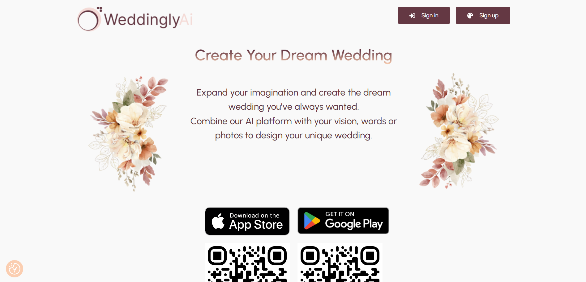
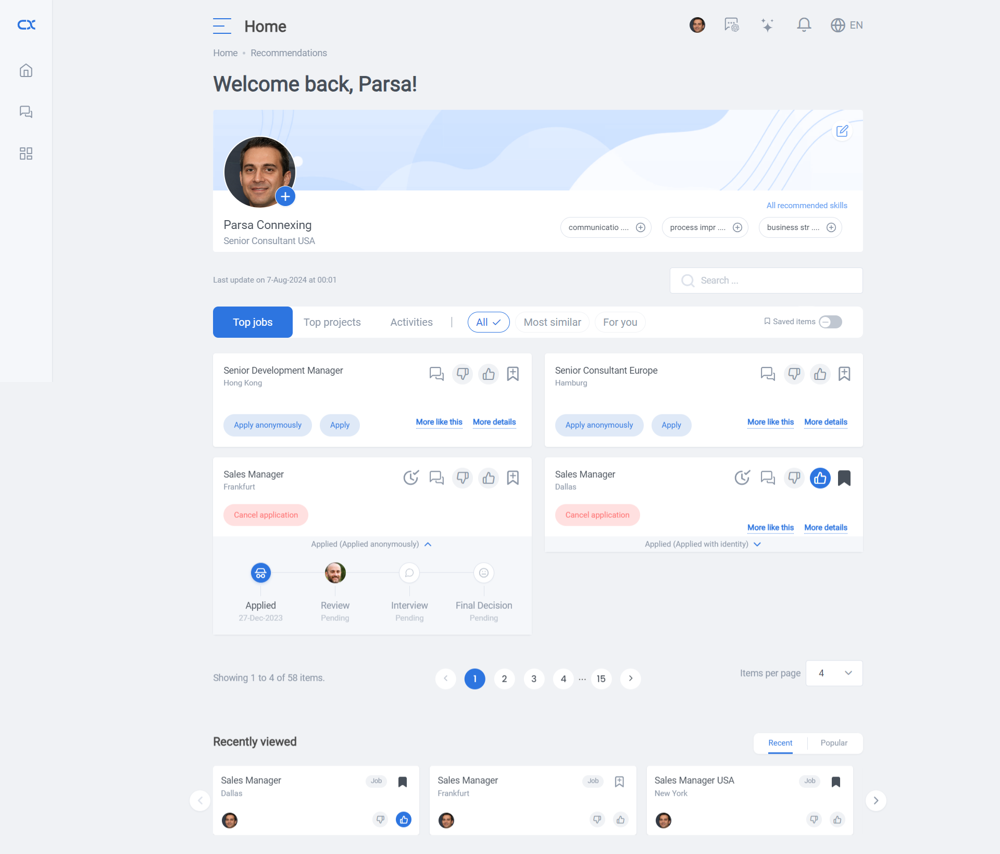
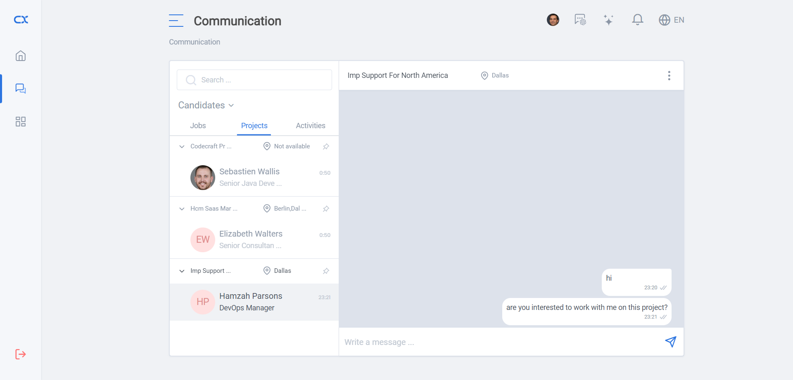
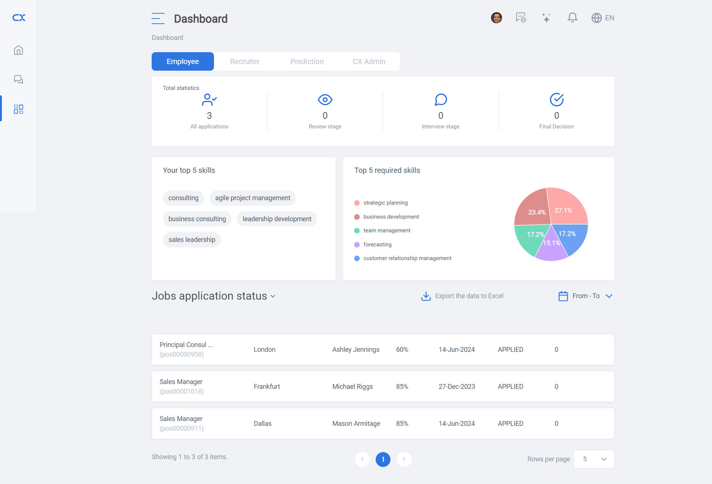
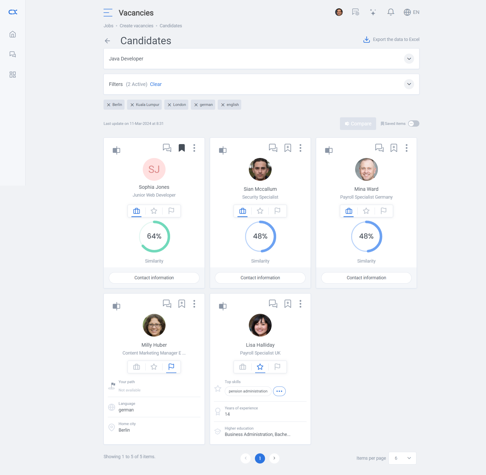
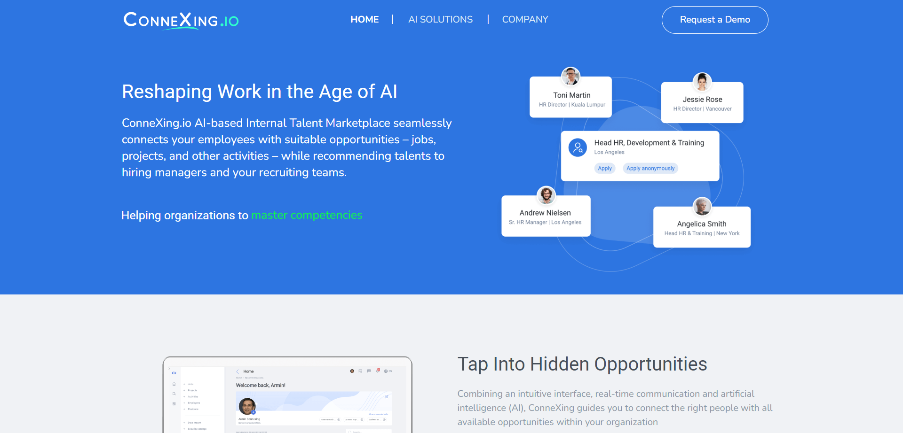

Projects
WeddinglyAi website
Project overview
Weddingly is a comprehensive platform designed to simplify and enhance the wedding planning experience. As a modern solution for couples looking to streamline their wedding preparations, Weddingly offers a range of tools and features to ensure every aspect of the big day is meticulously planned and executed. This is the landing page built with wordpress, some enhancements and custom HTML and CSS animations have been added by me.
View this project WeddinglyAi web application
The Weddingly web application represents a modern approach to wedding planning, leveraging advanced frontend technologies to provide a robust, user-friendly tool. It exemplifies best practices in frontend development and UX principles, focusing on performance, maintainability, and an exceptional user experience.
Key technologies
- React.js: The application is built using React.js, a popular JavaScript library for building user interfaces. React's component-based architecture allows for modular, reusable components, ensuring efficient development and maintenance.
- Redux: For state management, Redux is integrated to handle complex application state, providing a predictable state container and enabling consistent behavior across different components.
- React Router: Utilized for client-side routing, React Router enables seamless navigation between different views within the application without full-page reloads, enhancing the user experience.
- Styled Components: CSS-in-JS with Styled Components is used to create visually appealing and maintainable styles. This approach allows for scoped styling and easier management of component-specific styles.
- Axios: Axios is employed for making HTTP requests to the backend API, handling data fetching, and ensuring robust error handling.
- MaterialUI: The beautiful and user-friendly UI library by google, partially used in the user interface of the web application.

Connexing.io web solution
Connexing is a cutting-edge platform designed to facilitate professional networking and streamline business connections. It serves as a comprehensive tool for professionals and organizations to connect, collaborate, and grow their network efficiently. This website was created with wordpress, HTML, CSS and more complex CSS animations.
Key technologies
- React.js: The application is built using React.js, a popular JavaScript library for building user interfaces. React's component-based architecture allows for modular, reusable components, ensuring efficient development and maintenance.
- React Router: Utilized for client-side routing, React Router enables seamless navigation between different views within the application without full-page reloads, enhancing the user experience.
- SASS: CSS preprocessor library used for maintainability and creating reusable styles throughout the system.
- Axios: Axios is employed for making HTTP requests to the backend API, handling data fetching, and ensuring robust error handling.
- Websocket: Websocket was implemented for creating an interactive chat platform inside the system.
Due to the restriction agreements and NDAs, I am not allowed to share a link to this software publicly. However, some more screenshots are provided.
   Connexing.io company website
This website was created with wordpress, HTML, CSS and simple CSS animations and is used as an intoruction to connexing's main web-based software solution.
View this project 